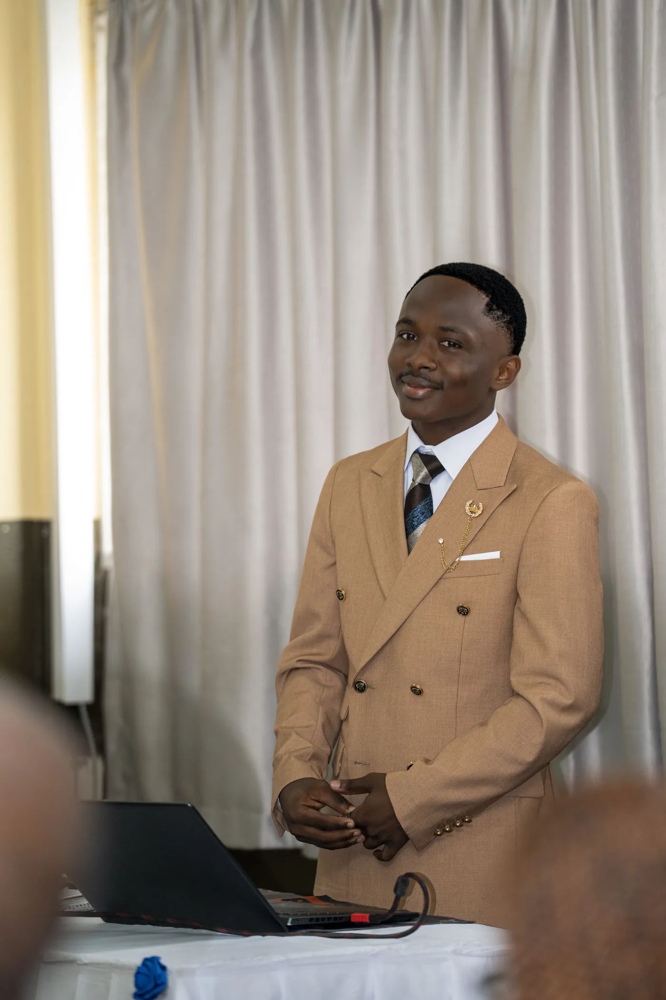

Routing & IP addressing
Study and configuration of dynamic routing, addressing and inter-network communication.
TCP/IPIPv4 / IPv6OSPFBGPSubnetting
Network & IoT Engineering · Abidjan, Côte d’Ivoire
Network & IoT Engineering · Secure Infrastructure · Connected Systems
I am pursuing a Master’s degree in Networks and Telecommunications at ESATIC. My work explores network architectures, secure multi-site connectivity and long-range IoT systems. Each project clearly states its actual stage, from design to prototype.

01 · About
Design, prototype and document solutions around their technical constraints and real-world context.
After earning a Bachelor’s degree in Networks and Telecommunications with High Honours, I joined ESATIC’s Master’s programme in the same field in September 2026.
My projects have involved sensor data collection, long-range links, IoT monitoring and secure network interconnection. I also value hands-on prototyping and knowledge sharing through robotics and digital fabrication workshops.
My approach favours clear architectures, explained technical choices, and an honest distinction between what has been built, tested or is still under study.
02 · Core expertise
A foundation developed through coursework, practical labs and internship experience: designing, configuring and troubleshooting network infrastructure.
Study and configuration of dynamic routing, addressing and inter-network communication.
Hands-on LAN configuration, from cabling to logical segmentation.
Filtering, segmentation and secure tunnelling principles explored in the NEXORA multi-site connectivity project.
Infrastructure monitoring and network troubleshooting tools explored in practical work.
Illustrative learning diagram; it does not represent a deployed network.
03 · Selected projects
Each project outlines its context, architecture choices and current stage without claiming undocumented deployments or results.
Subiakro pilot-site context · Yamoussoukro
Academic design and prototyping
Design a system to track irrigation turns on the Subiakro rice-growing site, connecting field measurements to a usable monitoring interface.
Make irrigation turns easier to track across a rice-growing area with widely spaced measurement points.
Heltec node / flow sensor → LoRaWAN link → gateway and ChirpStack → React / Vite web monitoring.
Designed for the Subiakro site in Yamoussoukro. Presented as a design / prototype; no measured outcome or operational deployment is claimed here.
Award-winning project · prototype / design
Explore environmental monitoring in remote forest areas using low-power IoT nodes, a long-range link and a monitoring system.
Relay observations from forest areas where conventional connectivity is limited.
Environmental sensors → ESP32 nodes → LoRa link → receiving station and monitoring / alerts.
Awarded first prize at the ESATIC welcome hackathon and SIADE. Presented as a design / prototype; no forest deployment is claimed.
Laboratory prototype · not deployed in production
Design and prototype secure connectivity between judicial-sector sites in a lab, using segmentation, filtering and VPN access.
Protect communications between sites through a segmented architecture and encrypted tunnels.
Remote sites → VPN tunnels → central hub (hub-and-spoke); filtering and VLANs on pfSense firewalls. WireGuard, OpenVPN and IPsec are approaches studied, not all claimed as deployed.
Second prize at the ESATIC Technovore Hackathon, Network Level 2. Laboratory prototype only; not deployed in production.
IoT prototype
ESP32 prototype monitoring agricultural conditions through soil-moisture and temperature readings, with local signals to support irrigation management.
Soil-moisture and temperature sensors → ESP32 → local indicator.
Prototype; future monitoring or automation features are not presented as already deployed.
Local experiment
Local collection of measurements from MQ-7 and MQ-135 sensors connected to an ESP32. Data is sent as JSON over HTTP to a local PHP server and stored with timestamps.
MQ-7 / MQ-135 sensors → ESP32 → HTTP / JSON request → local PHP server → timestamped log.
Data collection and logging on a local network. No performance or load-test results are claimed.
Educational experiment
Experiments controlling electronic systems and motors with an HC-05 module and a mobile app built with MIT App Inventor.
MIT App Inventor app → HC-05 Bluetooth → Arduino / control electronics → motors.
Prototyping experiments and workshops; no production deployment is claimed.
04 · Experience & education
April – August 2026
CASUR GROUP · Abidjan
Contributed to network infrastructure deployment, structured cabling, equipment configuration and interconnection maintenance.
2024–2025 · HFABLAB internship
HFABLAB / STEMLAB
Hands-on Arduino and ESP32 workshops, robotics guidance, and introductions to 3D design, 3D printing and laser cutting.
05 · Additional expertise
Tools and technologies grouped by domain, without arbitrary proficiency bars or scores.
IPv4/IPv6 addressing, router and switch configuration, VLANs, trunks, routing, Cisco IOS, Huawei VRP, Packet Tracer, GNS3 and network troubleshooting.
ESP32, Arduino, sensors, LoRa/LoRaWAN, Heltec modules, data collection, HTTP, JSON and local logging.
Segmentation, VLANs, filtering, VPN principles, pfSense, WireGuard, IPsec, OpenVPN and SSH; no production deployment is claimed for NEXORA.
Linux, basic system administration, SSH, VirtualBox, Git, Docker, Docker Compose, PlatformIO and VS Code.
Python, PHP, JavaScript, C/C++, React, Vite, Node.js, Express, Flutter, HTTP APIs, JSON and CSV.
Proteus, Fusion 360, SolidWorks, SketchUp, Inkscape, Cura, 3D printing, laser cutting and electronics prototyping.
06 · Awards
Awards recognise the projects / teams and are not presented as individual certifications.
ForestGuard · Environmental monitoring using IoT and LoRa.
ForestGuard · Early wildfire detection concept.
NEXORA · Secure interconnection for judicial infrastructure.
Academic distinction earned at ESATIC.
What’s next?
Open to conversations about networks, telecommunications, IoT and professional opportunities in Abidjan and beyond.